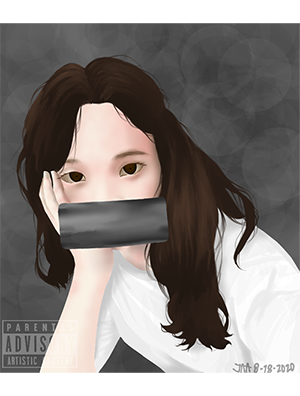
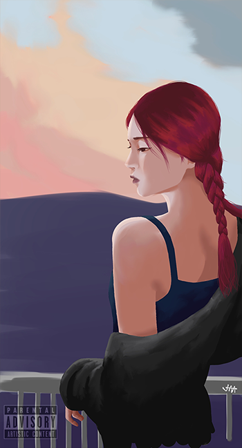
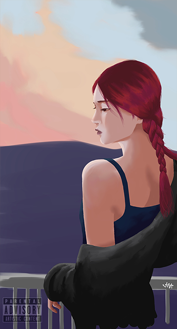

Introduction About Myself
Submitted by: Ayran, Joshua A.
Activity in CS Elective 1
Hi! Today we are talking about me so seat back relax and enjoy the read!

My name is Joshua A. Ayran, you can call me Josh. I just turned 21 years old this last May 2.
My address is live at Purok 6 Coral Road Kalaklan Olongapo City.
I am 3rd Year at Gordon College as a Computer Science Student. Studying Computer Science is tough
but we need to finish what we started and hope for the best in the future.
Here are some additional information about me:
Here are some additional information about me:
- I love to draw (digitally and tradionally)
- I like to watch anime
- I read mangas and manhwas
- I play games like Wildrift, Apex Legends Mobile, and many more
- I am not into spicy foods
- I'm into comedy, horror, psychological, gore, supernatural, and apocalyptic type of movies
- I am not a sporty kind of person
- I like staying at home
- I hate unecessary noise
I mentioned earlier that I read manga and here are some of manga panels that I like
Figure 1.1 Manga panel from Doctor Stone
Figure 1.2 Manga panel from Promise Neverland
I also mentioned earlier that I love to draw, here are some of my artworks

 

The figure below is the artwork I am currently working on. It is Makima from manga(incoming anime) The Chainsawman.